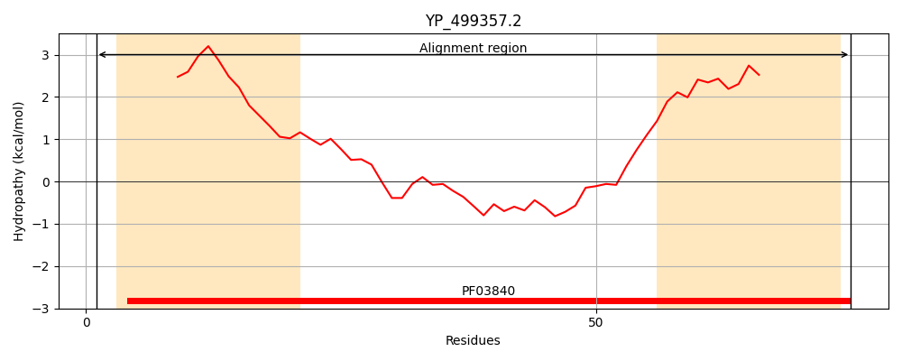
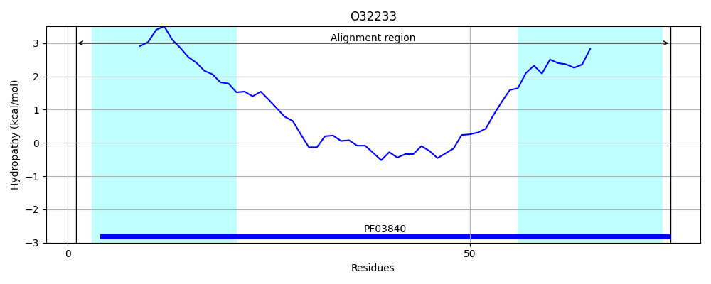
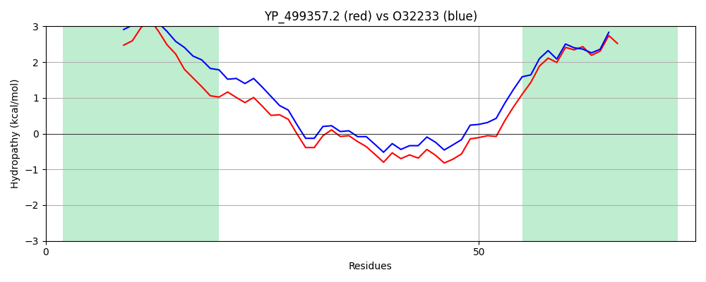

Hit Accession: O32233
Hit TCID: 3.A.5.2.1
Hit Description: gnl|BL_ORD_ID|7100 gnl|TC-DB|O32233|3.A.5.2.1 Probable protein-export membrane protein SecG OS=Bacillus subtilis (strain 168) OX=224308 GN=secG PE=2 SV=1
Mach Len: 75
e:0.000000
Query TMS Count : 2
Hit TMS Count: 2
TMS-Overlap Score: 1.900000
Predicted Substrates:CHEBI:8526;protein polypeptide chain
BLAST Alignment:
| Protein Hydropathy Plots: | |
|---|---|
|  |  |
Pairwise Alignment-Hydropathy Plot: | |
|  | |